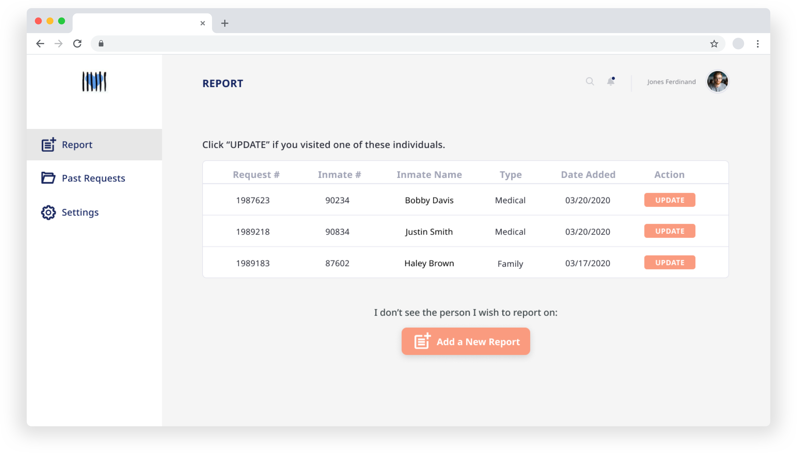

Pennsylvania Prison Society
Role
UX Researcher
UX Designer
Documentation Lead
Tools & Methods


Contextual Research, Stakeholder Mapping, Crazy 8 Brainstorming, Think Aloud/Task Analysis, Experience Prototyping, Remote Usability Testing
Team
Elizabeth La
Zoe Lin
Jiayi Zhao
Elliot Allard
TL;DR:
PPS, an volunteer organization that visits individuals within the prison system, needed to find a way to encourage volunteers to document visits in order to fight systematic issues with the PA prison system.
When we conducted our research, I identified painpoints that highlighted severe technical constraints. Volunteers within the PPS had varying levels of technology illiteracy and prisons/jails security enforcement were different all across Pennsylvania. This lead us to immediately rule out low technology/paper based solutions because they simply were not viable due to security concerns.
As a result, we created a "common script," which could be applied to different platforms (web application, online form, phone call), that offered flexiblity for volunteer reporting.
The Problem
We were approached by Pennsylvania Prison Society (PPS) to assist them with a UX problem. For a little background, PPS is the oldest inmate protection organization in the country, and it works to better the conditions of incarcerated people across the state. They do this primarily through sending in Official Visitors (OV) – volunteers who are granted special access to incarcerated people and advocates for issues and concerns of incarcerated people.
However, they found that many of their OVs did not consistently document their visits to incarcerated individuals so they wanted a method that would create and encourage consistent documentation across the volunteers in the commonwealth.
The Stakes
As an organization, PPS sometimes recieves repeat statements/reports from different incarcerated individuals within the same facility. These repeat reports often indicate patterns that can be instrumental in improving the incarcerated individuals' conditions.
For example, one individual experienced sexual abuse from a corrections officer (CO). Sometime later, PPS recieved another report from another individual who experienced sexual abuse and the same CO's name showed up. Because there was thorough documentation of both of these occurences, PPS was able to build a case against the CO and have them removed. If Official Volunteers can create consistent documentation, PPS can analyze patterns and fight systematic injustices within the prison system.
Key guiding questions: How might we...
- ...encourage reporting and record keeping?
- ...assign volunteers?
- ...track requests?
The Solution

Home Page of the Web App Solution
Based on the recurring ideas within our research and usability testing, our final design was an information managing system which accommodates various report behaviors from different chapters and assists the main office to file and assign requests. We reduced the flow of a request to some core questions which was applicable to multiple platforms like google forms, a phone conversational user interface, and a web application. This breadth of application was intended to cater to the diversity of volunteers and their workflows.
Research | Overview
We have held several semi–structured interviews with our client and the organization’s Director of Volunteers, and have performed analytical methods such as stakeholder mapping, flow diagramming and user journey mapping. From these methods, we have derived 4 key insights:
- relating to the localization of chapter behavior,
- the aggregation of requests,
- the disorganized intake of requests, and
- the lack of incentive to report.
The painpoints we found from the insights were likely derived from:
The number of volunteers also contribute to different chapter behavior. Different policies between prisons lead to different report flow. There is no shared system across all chapters, but each chapter has existing workflows they operate on. The inconsistent report format makes filing requests difficult for PPS office.
Ideation | Low to Mid Fidelity
Based on the interviews and site visits we did, we relocated our focus from the four insights we had:
-
Unified report aggregation
- When interviewing the different chapters, we found that official visitors were ambivalent towards reporting back to the office. This meant that the main office was getting reports, if any, sporadically.
- Optimize existing operating system
- Balance chapter resource in request assign
-
Uniform report format
- Because of the different types of reporting styles that chapters have, from spreadsheets to emails for individual requests, there is a large discrepancy in how reports look and work. The unification of a report format will allow for a smoother workflow when analyzing the data received from the sketches.
After generating new insights from our recent observations and informal interviews, we gathered together to use the new insights we generated and did a crazy 8 activity to just throw out ideas that can address the pain points. We based our first low fidelity prototype on the results of the crazy 8 activity.
Iteration | COVID-19 & User Testing
When we started working on our mid-fi prototype, COVID-19 had forced PPS to temporarily halt in-person visits. PPS had adapted to video call visits for volunteers who could use video calls, as well as making an online form to ensure that facilities are actively participating in proper COVID-19 spread prevention methods.
Parallelly, we designed a common script– a set of questions that OVs typically ask or procure information about, which would be adaptable to multiple platforms: like web forms, interactive voice response(IVR, which is similar to a conversation user interface like Alexa or Siri), and like we had done originally, a web application. We decided that this would be critical to address the diversity of OVs and their reporting styles.
For the low-fidelity web app prototype, we defined the tasks that a typical Official Visitor(OV) or Chapter Convener would have to do. When we tested these tasks through a think aloud, all of our users found the task names to be confusing. They also missed the human interaction when they interacted with our prototypes. During our rounds of iteration, we found that separating the tasks by ongoing requests and past requests was far more effective and clearer. We also added a simple "seen" column to assure the volunteers that their hard work has been viewed and acknowledged.
We had also tested our common script on several users. We found that users were always zealously talking about the visit details and stories before they ever thought about documentation information like inmate IDs or even the location of their chapter. They had also expressed that answering identification information individually was a hassle. As such, we revised the common script to first ask about the visit details before asking about documentation information and we greatly reduced the amount of identification questions and merge questions where we could.
Solution
Clickable
web app
prototype
here.
Web
form/common script
prototype
here.
Based on the recurring ideas and usability testing, our final design will be an information managing system which accommodates various report behaviors from different chapters and assists the main office to file and assign requests.
we developed the two major solutions that the organization is having most trouble with: the formalization of reports, and the tool to manage and review them. And the final design is a web–based system to collect report in different format:
- The common report script for volunteers: there will be a common report script, which enables volunteers to submit reports through a web based form or through a phone call via IVR.
- The web–based system for volunteers: enabling them to see their request assignments, their report records and take further actions.
- The web–based system for PPS Office: Their web–based system end will be able to see all reports from volunteers across Pennsylvania, and assign requests to different chapter conveners or individual volunteers, while volunteers could only see their own assignment. The system would automatically document those reports, show trends of report types, and enable a flat organizational structure to assign reports to chapter conveners or to individual volunteers in an area without a chapter.
As the director of PPS office continues to implement and comprehend the system, the different user end will come together into an ecosystem, which delivers our four core ideas: central hub, frictionless documentation, maintaining different levels of access and turning qualitative data into quantitative data.
This solution is readily adaptable now, due to the adaptability of the research and workflow. This is more important than ever before, especially during the time of COVID-19, where incarcerated individuals will find it near impossible to adhere to CDC guidelines and their voice need to be heard. The multi-platfrom approach of our solution allows for PPS to create a timeline where they can immediately implement the google form from our solution and eventually build the IVR and web application.
Solution | Takeaway
Designing for a system with so many constraints was difficult. We spent a lot of time understanding the space, as all of us were unfamiliar with the prison system. It was an incredibly humbling experience to talk to incarcerated individuals, as well as hearing stories and struggles from Official Visitors. I felt that the time we spent on contextual and user research gave us a proper understanding of the challenges the users face that ultimately guided us to a viable solution for PPS. Unsurprisingly, good user research rooted all successful UX projects.